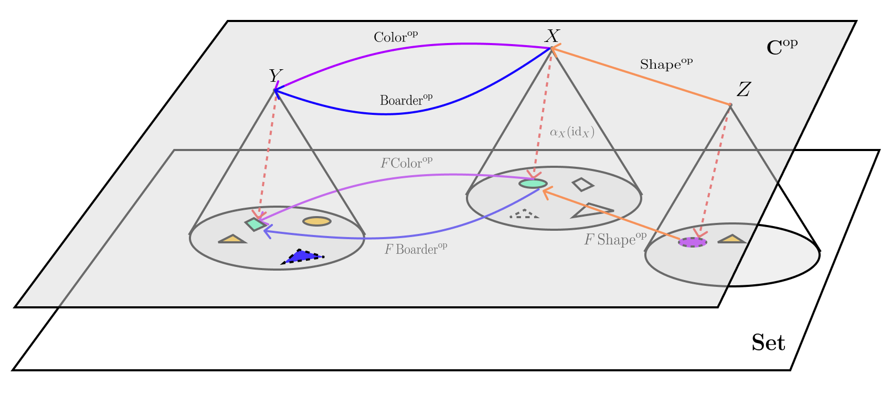

Required Knowledge: some conformation with what category is, for the latter section, you would need to understand the notion of functor and natural transformation.
The notes are adapted from The Dao of Functional Programming by Bartosz Milewski and Notes on Category Theory with examples from basic mathematics by Paolo Perrone
Probing Action
We shall start with the general “relational” aspect of category theory, being the main strength of category theory. It is quite clear that category prohibits the viewing of the inside of the object, that is we can only compare/inspect objects using an arrow. Let’s start with the simplest example.
Remark 4. Given the category of sets \(\textbf{Set}\), where its object are all the sets (we will ignore the issue of Russell’s paradox for now) and the morphisms between sets are relation between sets. To see the elements of a set \(A\), one can observe the following: \[A\cong\operatorname{Hom}_\textbf{Set}(1, A)\]
where \(1\) is a singleton set i.e set with only one element. With this, one can “represent” the elements of the set based on the set of morphism from singleton set. Or, in other words, we have used the singleton set \(1\) to ``probe’’ into the set.
Let’s consider this probing action in a more generalized manner.
Definition 1 (Probing Actions/Neutrality Condition) Let’s consider the following diagram, where on the LHS, we consider the action of “changing target”, while the RHS got to do with the “changing the source” (from \(X\) to \(Y\) in both cases), highlighted in red:
Please be aware that these two diagram are independent of each other. We can see, here, that to change the target of viewing, we can perform the post-composition of the morphism between 2 targets to the probe. Similarly, the pre-composition is used to change the source.
Naturality Condition: It wouldn’t make sense if we are were to change the target and the source (LHS diagram below), and get different result from when we change the source and then target (RHS diagram below):
Therefore, we enforce the neutrality condition onto the probing action (the naming does make sense, as it is “natural” to be this way): \[ (-\circ g)\circ(f\circ-) = (f\circ-)\circ(-\circ g) \]
Given this alone, we can state the special case of Yoneda lemma, where the gist of it is that the object can be characterized based on the arrow coming in. If 2 objects has the same relation to all other objects, then they are strong resemble (isomorphic) each others.
Proposition 1 : Within category \(\textbf{C}\), given a pair objects \(A\) and \(B\) and with any object \(X\), we have an naturally isomorphic \(\operatorname{Hom}_\textbf{C}(X, A)\cong\operatorname{Hom}_\textbf{C}(X, B)\) iff \(A\cong B\). That is, if the arrow coming to both \(A\) and \(B\) are indistinguishable, then \(A\) and \(B\) are isomorphic.
\((\boldsymbol{\implies}):\) Let’s call the map between \(\operatorname{Hom}_\textbf{C}(X, A)\) and \(\operatorname{Hom}_\textbf{C}(X, B)\) to be called \(\alpha_X\). Let’s explain what it means for \(\alpha\) to be natural. We have that both change of source and target should be the same:
Or \(\alpha_X(h)\circ g = \alpha_Y(h\circ g)\). To show that \(A\cong B\), we will have to find a map between \(A\) and \(B\) and its reverse. Let’s start with a map \(A\to B\), we can have:
that is \(\alpha_A(\operatorname{id}_A):A\to B\), and its (candidate) inverse is \(\alpha^{-1}_B(\operatorname{id}_B):B\to A\). To show that it is actually an inverse, we need to show that:
\[ \begin{aligned} \alpha_a(\operatorname{id}_a)\circ\alpha^{-1}_b(\operatorname{id}_b) &= \alpha_b(\operatorname{id}_a\circ\alpha^{-1}_b(\operatorname{id}_b)) \\ &= \alpha_b(\alpha^{-1}_b(\operatorname{id}_b)) = \operatorname{id}_b \\ \\ \alpha^{-1}_b(\operatorname{id}_b)\circ\alpha_a(\operatorname{id}_a) &= \alpha_a^{-1}(\operatorname{id}_b\circ\alpha_a(\operatorname{id}_a)) \\ &= \alpha_a^{-1}(\alpha_a(\operatorname{id}_a)) = \operatorname{id}_a \end{aligned} \]
where we have used the neutrality condition for both cases. Thus, we have shown that \(A\cong B\)
\((\boldsymbol{\impliedby}):\) Let’s assume that \(A\cong B\) that is there is an isomorphism \(f:A\xrightarrow{\cong} B\), we will have to construct the map \(\alpha\), in which we aim to show that it is actually \((f\circ-)\). There are 2 things we have to check:
- Neutrality: It is clear that \((f\circ-)\) will satisfies the neutrality condition (which is by definition).
- Isomorphism: The inverse of this probing is \((f^{-1}\circ-)\), it is clear that \[ \begin{aligned} (f^{-1}\circ-)\circ(f\circ-)=(f^{-1}\circ f\circ-)=(\operatorname{id}_A\circ-) \\ (f\circ-)\circ(f^{-1}\circ-)=(f\circ f^{-1}\circ-)=(\operatorname{id}_B\circ-) \end{aligned} \]
We can see that this is also consistent with the construction above \(\alpha_a(\operatorname{id}_A)=f\circ\operatorname{id}_A=f\), and \(f^{-1}\)
Proof
With very similar proof, in the next proposition, object can also be characterized based on arrow going out, and the result on isomorphism can be found as:
Proposition 2 : Within category \(\textbf{C}\), given a pair objects \(A\) and \(B\) and with any object \(X\), we have an naturally isomorphic \(\operatorname{Hom}_\textbf{C}(A, X)\cong\operatorname{Hom}_\textbf{C}(B, X)\) iff \(A\cong B\).
Categorical Construction
We can push our observation further: instead of study object via its relation, shouldn’t we also define an object based on the expected relation with other objects ?
Terminal Object
Let’s go back to the Remark 4, and generalize the notion of singleton.
Definition 2 (Initial and Terminal Objects): We will consider 2 kinds of objects that have the similar way of defining:
- Initial object, denoted \(0\), is an object that have unique morphism from itself to every object (including itself). We see it as an object that expands toward all the other objects
- On the other hand, terminal object, denoted \(1\), is an object that have unique morphism from every object to itself (including itself). We can see it as an object that all arrows converges.
We have the following illustration for this kind of objects:
Note that we can still have arrow coming into initial object or arrow coming out of terminal object, but these won’t enjoy the special properties.
Before we move on, we want to note that the uniqueness of arrow (part of what is called universal property) is of extreme importance, and related directly to the probing action (Yoneda lemma), as we will see. In the case of Set, we have that:
Remark 2. In \(\textbf{Set}\), an empty set \(\emptyset\) is an initial object, and singleton set (which we denote collectively as \(1\)) is a terminal object:
- Thus, in general, one can generalize the selection of elements in the object \(A\) using the morphism from a terminal object to \(A\). Therefore, with \(f:A\to B\), the notion \(f(A)\) is actually a composition with arrow \(A:1\to A\) i.e \(f\circ A\)
- It may be quite clear from now that there can be “multiple” initial and terminal object, for example, in \(\textbf{Set}\), the terminal objects are \(\{1\}, \{2\}, \{\blacksquare\},\dots\). But we can show that it is unique .
Again, there can be multiple number of intial/terminal objects, but, rest-assure, they are all isomorphic to each other, as we have:
Proposition 3 : A terminal (initial) object are unique up to isomorphism. In other words, given 2 objects \(A\) and \(A'\) both having a property of terminal (initial) object, then \(A\cong A'\)
We will provide the proof for terminal object only, but the proof for initial object is similar. We note that by definition, there is an unique arrow from \(f : A\to A'\) and \(g: A'\to A\):
- We see that when both of them are composed i.e \(g\circ f:A\to A\) and \(f\circ g:A'\to A'\), they will give rise to identities functions \(\operatorname{id}_A\) and \(\operatorname{id}_{A'}\)
- That is because identity is the only morphism that maps both object to itself by the definition of the terminal objects.
Thus \(f\) and \(g\) are inverse of each other and \(f\) is an isomorphism, as needed.
Proof
Product
Now, we are ready to start defining the product, so let’s start with the product in \(\textbf{Set}\), first:
Remark 3. If we remember well, given set \(X\) and \(Y\), one can define the cartesian product between them as:
\[ X\times Y = \big\{ (x, y) : x\in X \text{ and } y \in Y \big\} \]
The interesting part of the cartesian product is that its element, one can recover the element of both sets via the projecton map \(\pi_1:X\times Y\to X\) and \(\pi_2:X\times Y\to Y\), where both \(p_1((x', y'))=x'\) and \(p_2((x',y'))=y'\). One can view cartesian product as accurate way to mix of elements of \(X\) and \(Y\), while we can recover the original information using the projection.
With this in mind, we can define a product in general as:
Definition 3 (Categorical Product): The product between \(A\) and \(B\) in category \(\textbf{C}\) is denoted as \(A\times B\) together with morphism \(p_1:A\times B\to A\) and \(p_2:A\times B\to B\) i.e \((A\times B, p_1, p_2)\) such that given any object \(X\) with arrow \(f_1:X\to A\) and \(f_2:X\to B\), there is unique arrow \(h:X\to A\times B\) (and given unique \(h\) there is unique pair of arrow) such that the following commutative diagram holds:
Now, we can recover the cartesian product from the categorical product on \(\textbf{Set}\) category.
Proposition 4 : Categortical product between \(A\) and \(B\) in \(\textbf{Set}\) is the Cartesian product \(A\times B\), and Cartesian product \(A\times B\) is the categorical product.
(Part 1): We can set the object \(X\) with a terminal object \(1\) (see the figure below, which is the singleto set). Recall that map from a terminal object selects an element of the target.
Then, we can have the \(f_1\) selects one object \(a\) from \(A\) and \(f_2\) selects one object \(b\) from \(B\), then \(h\), in order to enforce the uniqueness can be set to selecting a pair of \((a, b)\). Finally, by the commutativity, the map \(p_1\circ h=p_1((a, b)):1\to A\) should select the same object as \(f_1\) which is \(a\). Thus \(p_1\) is a projection of first element. The same can be shown with \(p_2\). So, the first part has been proven.
(Part 2): To show that cartesian product is a categorical product, we will have to construct \(h\) given \((f_1,f_2)\) and vice versa with any set \(X\). Let’s consider such construction:
- Given the function \(f_1:X\to A\) and \(f_2:X\to B\), then \(h:X\to A\times B\) can be set to be \(h(x)=(f_1(x), f_2(x))\)
- On the other hand, with a function \(h\) one can use the commutativity to define both \(f_1\) and \(f_2\) i.e \(f_1 = p_1\circ h\) and \(f_2 = p_2\circ h\)
Proof
Results on Products
In the next few results, we are also going to proof a simple arthemtics for the product (and to show how the universal construction can be used).
Proposition 5 : Given object \(A\) in category \(\textbf{C}\) that has terminal object \(1\), we can show that \(A\times 1\cong A\)
We consider the following diagram:
One can see clearly that \(p_1\circ h=\operatorname{id}_A\), we are left to show that \(h\circ p_1=\operatorname{id}_{A\times1}\). To do this, we have the following comparision diagram (every thing commutes):
Please note that by definition of terminal object, \(p_2=!_{A\times1}\) and it is unique (hence the \(A\times1\to1\) on the right edge of LHS diagram is correct). Since the definition of product holds that there is a unique pair of arrows, we can see that \(h\circ p_1=\operatorname{id}_{A\times1}\)
Proof
and we can also prove the commutativity of a categorical product.
Proposition 6 : Given object \(A\) and \(B\) in category \(\textbf{C}\), we can show that \(A\times B\cong B\times A\)
We consider the following diagrams:
We will claim that \(h\) and \(h'\) are inverse of each other i.e \(h'\circ h=\operatorname{id}_{B\times A}\) and \(h\circ h'=\operatorname{id}_{A\times B}\), thus \(h\) is isomorphism. To show this, we can stack diagram above up (to get the LHS version and it is clear that it commutes).
On the RHS, we have the obvious commutative diagram, but please note that by definition of categorical product (the universal construction), given a pair \((p_1',p_2')\), we have the unique correspondance to the map \(\operatorname{id}_{B\times A}\). Thus, \(h'\circ h=\operatorname{id}_{B\times A}\) by the uniquenes. The proof that \(h\circ h'=\operatorname{id}_{A\times B}\) follows in similar manners.
Proof
Finally, we can consider the functoriality of the product, in which the “lifting of the morphism can be performed. (we will discuss the actual notion of functor in later section).
Remark 4. (Parallel Application of Product) Given two morphisms \(f:A\to A'\) and \(g:B\to B'\), then we can construct the map \(f\times g :A\times B\to A'\times B'\) based on these 2 function as follows:
Yoneda Lemma…
Let’s recap what is going on when we constructing the product:
Remark 5. We would like to point out the common patterns that is starting to arise, whereby we define the categorical object by assigning a particular patterns (\(A\leftarrow X\to B\) in product case) and find the best object that represents it:
- The best one is selected based on (if it exists) the fact that all candidate objects (of a particular pattern) have a unique map to it.
- In the terminal object case, there isn’t a pattern, just a simple object.
This is called univeral construction. Please note that this can be formalized and we will show that the way it is constructed, every constructed objects will have the same arrow coming in and out, thus all objects that satisfies the construction will be isomorphic with each other.
Warning: We will now use the tools from category theory: functor, natural transformation, and opposite category.
Hom-Functor
From the construction that we have seen so far (and might as well be the central lession of category theory), everything should be defined based on the relationship.
Remark 6. (Information in Hom-Functor) With this, it is crucial to consider the hom-functor i.e \(\operatorname{Hom}_{\textbf{C}}(-, X):\textbf{C}^\text{op}\to\textbf{Set}\) i.e a functor that given the object in \(\textbf{C}\) will returns the information about arrows that has \(X\) as the target. In other words, the information about arrows into object \(X\) can be stored within this functor.
Let’s define the functor formally:
Definition 4 (Hom-Functor): The hom-functor denoted as \(\operatorname{Hom}_{\textbf{C}}(-, X):\textbf{C}^\text{op}\to\textbf{Set}\), where it has the following action on object and morphism:
- Object: Given object \(Y\) of \(\textbf{C}\) (as \(\textbf{C}^\text{op}\) have the same object as \(\textbf{C}\)), then \(\operatorname{Hom}_{\textbf{C}}(Y, X)\) is the set.
- Morphism: Given the morphism \(f^\text{op}:Y\to Z\) (in \(\textbf{C}^\text{op}\)), then we can create (lift) the morphism of \(\textbf{C}\) to get a morphism \(\textbf{Set}\) as follows: \[ \begin{aligned} \operatorname{Hom}_{\textbf{C}}(-, X)[f^\text{op}] : \operatorname{Hom}_{\textbf{C}}(Y, X)&\to\operatorname{Hom}_{\textbf{C}}(Z, X) \\ g&\mapsto g\circ f \end{aligned} \] Please note that the direction of the lifted map is \(Y\to Z\), as the same as \(f^\text{op}\) (and note that \(f:Z\to Y\))
To push the metaphor further, we can try to do the following
Remark 7. (Usage of Hom-Functor): Given the hom-functor, we can compare the objects based on the arrow into it i.e we can study the natural transformation between 2 hom-functors. For example, if we want to compare between \(X\) and \(Y\), then we can consider the following natural transformation \(\operatorname{Hom}_{\textbf{C}}(-, X)\Rightarrow\operatorname{Hom}_{\textbf{C}}(-, Y)\).
But, of course, we can generalize a general case, in which we consider the natural transformation between hom-functor and an arbitary functor i.e \(F:\textbf{C}^\text{op}\to \textbf{Set}\).
In the best case, we can get a natural isomorphism between hom-functor and any functor. This leads to the notion of representable functors
Definition 5 (Representable Presheaf): Given category \(\textbf{C}\), the functor \(F:\textbf{C}^\text{op}\rightarrow\textbf{Set}\) with is naturally isomorphic to \(\operatorname{Hom}_\textbf{C}(-, X):\textbf{C}\rightarrow \textbf{Set}\), then we have representable presheaf and \(X\) is called representing object.
With the notion of representable, we are going to stick to the concept of reconstruction1. That is, with a representable presheaf, we only have to inspect the arrows from \(Y\to X\) just to get what \(F\) does i.e a single snap shot on \(X\) from \(Y\) to get what we need.
In a less ideal case, we would need every angles possibles just to reconstruct the action of functor on one object. This is how Yoneda lemma works.
The Lemma
Now, we are ready to state the Yoneda lemma.
Theorem 1 (Yoneda Lemma): With category \(\textbf{C}\), an its object \(X\) and presheaf \(F:\textbf{C}^\text{op}\rightarrow\textbf{Set}\), then the map2:
\[ よ:\operatorname{Hom}_{[\textbf{C}^\text{op}, \textbf{Set}]}\Big( \operatorname{Hom}_\textbf{C}(-, X), F \Big) \xrightarrow{\cong} FX \]
assigning a natural transformation \(\alpha:\operatorname{Hom}_\textbf{C}(-,X)\Rightarrow F\) to an element \(\alpha_X(\operatorname{id}_X)\in FX\). The assignment is bijective and it is natural both in \(X\) and \(F\).
The proof will be presented in the next section. Before that, there are several observations that we can make here:
We take information about how \(FY\) looks like3, and the information about how \(Y\) is related to \(X\) to inform ourselves how to use the some aspect of \(FY\) to reconstruct an element in \(FX\) that is selected via natural transformation \(\alpha_X(\operatorname{id}_X)\).
Furthermore, we see that:
- This natural transformation of identity can be taken as a self-representation of that particular element of \(FX\).
- Observe that \(\operatorname{id}_X\) is seen in the proof of Proposition 1.
Let’s consider things in a more concrete example:
Remark 8. In this example, we are interested in reconstructing the \(FX\) based on the information of the others. We have the following diagram:

Firstly, we want to point out that the functor \(F:\textbf{C}^\text{op}\to\textbf{Set}\) can be seen as “rendering” the objects and morphism to a more human readable format, as we are more familiar working with sets.
(Meaning of Morphism): With functor \(F\), the object is rendered as sets of objects with different boarder, color and shape. On the other hand, the morphism is rendered as a relation between elements of objects if they have the same values of the properties4:
- The morphism \(F\operatorname{Shape}^\text{op}\) (\(F\) adds meanings to the morphism) acts as follows: the LHS indicates that the shapes don’t match: \[ F\operatorname{Shape}^\text{op}(\Box, \bigcirc)=\texttt{F} \qquad \quad F\operatorname{Shape}^\text{op}(\blacksquare, \Box)=\texttt{T} \] On the RHS, there is a relationship because the shape maps.
- Furthermore, the composition of the relationship will be true if every components are true. For example, \(F\operatorname{Shape}^\text{op}\circ F\operatorname{Color}^\text{op}\) is true with \(\bigcirc\mapsto\Box\mapsto\blacksquare\). Finally, \(F\operatorname{id}\) is always true regardless of any relationship, as we have a self-indentity.
(Meaing of Natural Transformation): For the natural transformation, with component \(\alpha_Y:\operatorname{Hom}_{\textbf{C}}(Y, X)\to FX\). Since we are working on the relation (rather than function), it relates an fixed element (and only varies when we have different natural transformation i.e aspect of \(FY\)), in our case it refers to the top left object at \(Y\) (see how orange arrow selects an object), to the relations (morphism), and output the property of tha object:
\[ \alpha_Y(\operatorname{Color}) = \textcolor{ForestGreen}{\text{Green}} \qquad \quad \alpha(\operatorname{Boarder}) = \text{Solid} \]
There are only 2 arrows from \(X\) to \(Y\). To see what the natural transformation relates element of \(FX\) by taking some aspect of \(FY\), we have to consider the following commutative diagram, representing the naturality of \(\alpha\):
Then, given \(F\operatorname{Color}^\text{op}(\alpha_X(\operatorname{id}_X))=\alpha_Y(\operatorname{id}_X\circ\operatorname{Color})=\alpha_Y(\operatorname{Color})\), or:
\[ F\operatorname{Color}^\text{op}\Big( \alpha_X(\operatorname{id}_X), \textcolor{ForestGreen}{\text{Green}} \Big) = \texttt{T} \]
Since \(\alpha_X(\operatorname{id}_X)\) represents the self-identity of the whole selected element of \(FX\) (see arrow), the naturality condition forces its color to be green.
- This can be repeated for other properties such as boarder types and different property i.e shape from \(Z\), and repeated for every element in \(FX\) via considering all natural transformation.
- And this is repeated for other selection of elements as we consider a set of natural transformations.
- Therefore, we can reconstruct elements of \(FX\) by inherited the color and boarder (relationship between \(X\) and \(Y\)) from the element within the “render” image \(FY\) of \(Y\), while inherited the shape from \(FZ\) (and so on).
Thus, we arrived at the intuition we have above: we need to know the relations between objects \(X\) and the other objects (hom-functor) and how these relations translates to each element of the set (natural transformation between hom-functor and \(F\)), in order to reconstruct the element of \(FX\).
In fact, we can state the intuitive that we have more formally in the following corollaries:
Corollary 1 (Yoneda Embedding): With category \(\textbf{C}\), and its object \(X\) and \(Y\) there is a bijection between the following sets:
\[ \operatorname{Hom}_\textbf{C}(X, Y) \cong \operatorname{Hom}_{[\textbf{C}^\text{op}, \textbf{Set}]}\Big( \operatorname{Hom}_{\textbf{C}}(-, X), \operatorname{Hom}_{\textbf{C}}(-, Y) \Big) \]
Using Yoneda lemma, we replace presheaf \(F\) by \(\operatorname{Hom}_\textbf{C}(-, Y)\)
Proof
Corollary 2 With category \(\textbf{C}\), and its object \(X\) and \(Y\), then \(X\cong Y\) iff hom-functors that they represent are naturally isomorphic.
Given morphism between \(X\) and \(Y\) to be \(f:X\to Y\), then by Yoneda embedding there is an associated natural transformation \(\alpha:\operatorname{Hom}_\textbf{C}(-, X)\Rightarrow\operatorname{Hom}_\textbf{C}(-, Y)\) such that \(\alpha_X(\operatorname{id}_X)=f\).
\(\boldsymbol{(\implies):}\) Since \(X\) and \(Y\) are isomorphic, we can let \(f\) above be that isomorphism between both objects. By using the natural transformation properties, for any map \(g:Z\to X\), we set \(\alpha_Z(g)=f\circ g\) because the following diagram has to commutes:
And, it is clear that each component of the natural transformation is inverse by the virtue of \(f\) being isomorphism i.e given \(\alpha^{-1}_Z(h)=f^{-1}\circ g\) for \(h:Z\to Y\)
\(\boldsymbol{(\impliedby):}\) We claim that \(\alpha_X(\operatorname{id}_X):X\to Y\) is an isomorphism with its inverse being \(\alpha_Y^{-1}(\operatorname{id}_Y):Y\to X\), which exists because \(\alpha\) is natural isomorphism. Then by the observation above:
\[ \operatorname{id}_Y =\alpha_Y(\alpha_Y^{-1}(\operatorname{id}_Y)) = \alpha_X(\operatorname{id}_X)\circ\alpha_Y^{-1}(\operatorname{id}_Y) \]
On the other hand, we consider the following commutative diagram being the natural isomorphism action on \(-\circ\alpha_X(\operatorname{id}_X)\) as:
And because \(\alpha_Z\) is isomorphism, we have that:
\[ \alpha_Y^{-1}(\operatorname{id}_Y)\circ\alpha_X(\operatorname{id}_X) = \operatorname{id}_X \]
Proof
Remark 9. (Interpretation of Result) When looking at the component of natural isomorphism, with any object \(S\) of \(\textbf{C}\), and \(X\cong Y\), we have:
\[ \operatorname{Hom}_\textbf{C}(S, X)\cong\operatorname{Hom}_\textbf{C}(S, Y) \] That is, if \(X\) and \(Y\) are indistinguishable by \(S\), for every \(S\) in \(\textbf{C}\). This also applied to \(\operatorname{Hom}_\textbf{C}(X, S)\cong\operatorname{Hom}_\textbf{C}(Y, S)\), where we would consider the dual case of Yoneda lemma.
Footnotes
This intuition is related to the Tannakian reconstruction (see The Dao of Functional Programming chapter 18) for more details.↩︎
よ is read as “yo”, in Hiragana (Japanese writing system).↩︎
In the formulation (and symbol) of Ends formulation of ninja Yoneda lemma, this metaphors even more clear in which we takes into account all \(Y\): \[ \int_{Y:\textbf{C}}\operatorname{Hom}_\textbf{Set}\Big( \operatorname{Hom}_\textbf{C}(Y, X), FY \Big) \cong FX \] (Ibid, chapter 17).↩︎
The notion of morphism doesn’t restricted to only function that takes input and output. Nonetheless, the relation can also be seen as function.↩︎